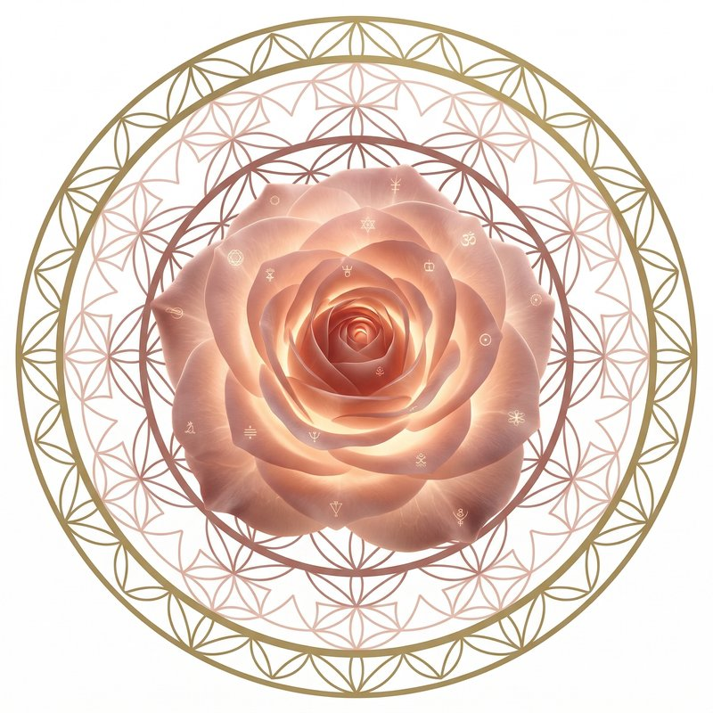
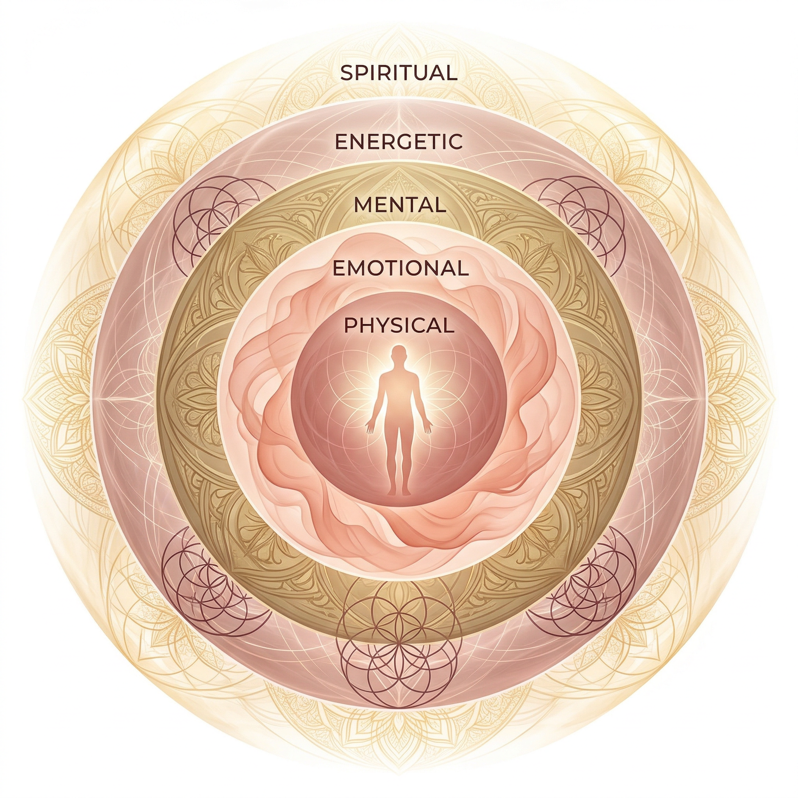
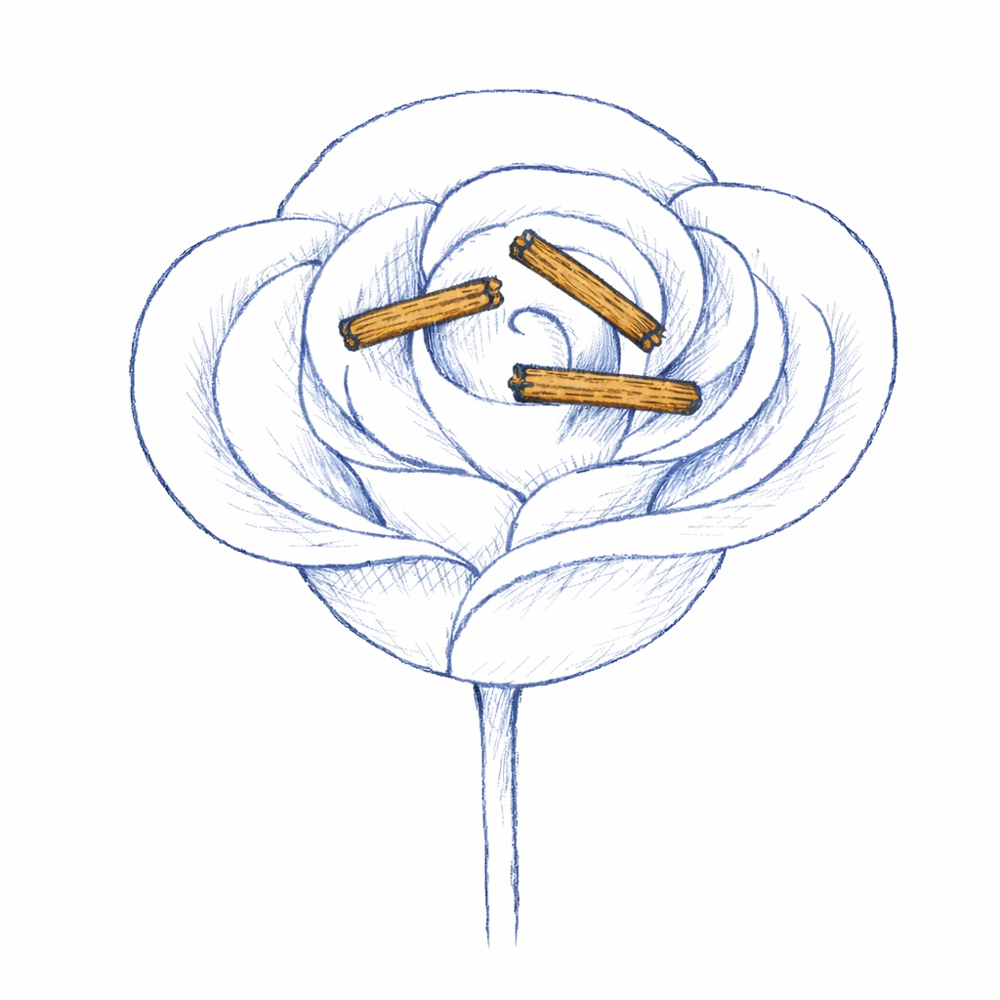
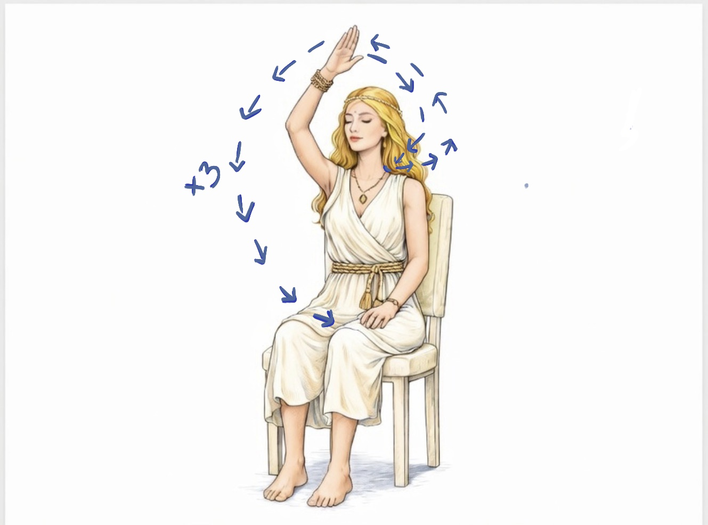
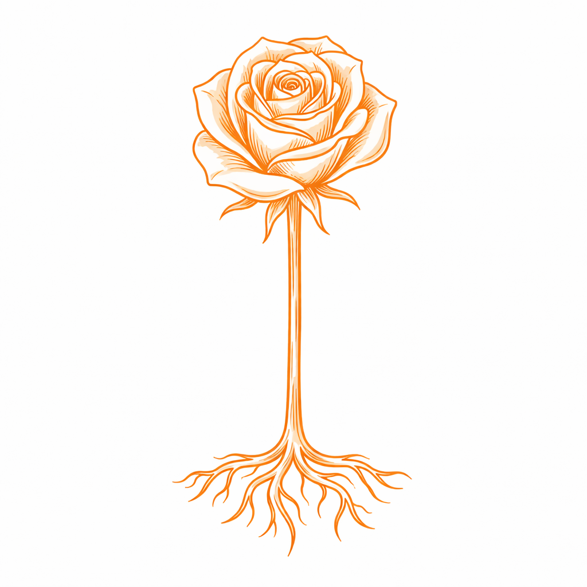
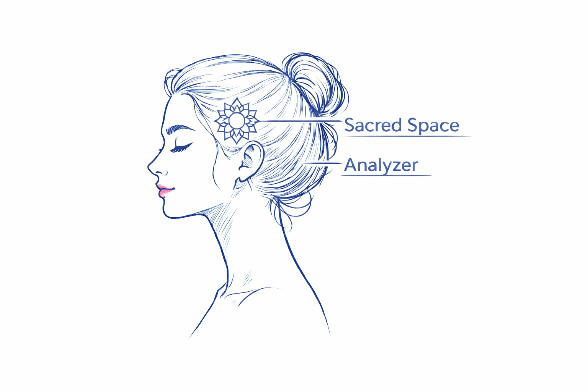
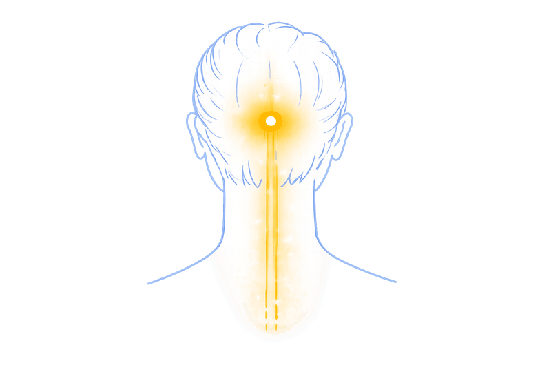
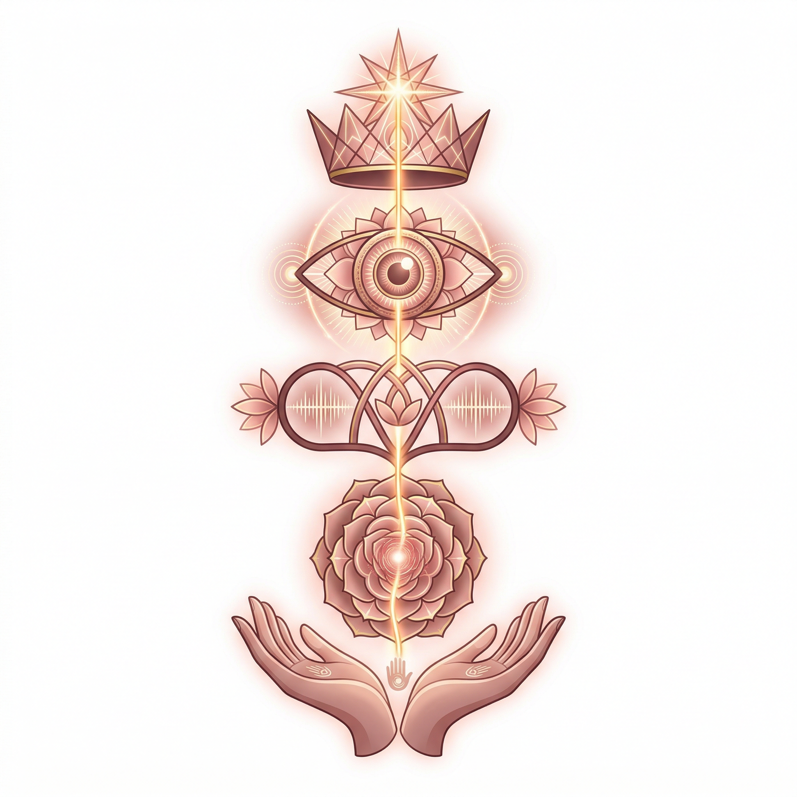
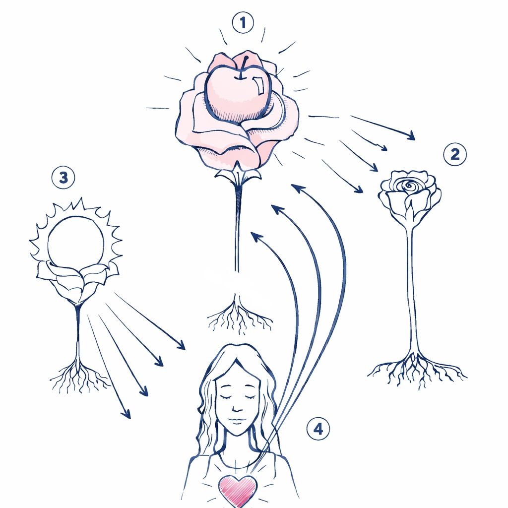

Level 3 — Initiation Course
Level 3 — Advanced Practice
| The 5 Bodies & 5 Levels of Existence | 3 | |
| Spiritual Level — Breaking Agreements | 5 | |
| Energetic Level — Cutting Cords | 6 | |
| Sexual Relationships | 7 | |
| Classes & Services | 8 | |
| The Analyzer | 10 | |
| Creation of Reality & Impeccability | 11 | |
| Mock-up — Manifestation Technique | 12 | |
| Elements of Level 3 | 13 |
Roses represent the spirit. They absorb all the energies, emotions, and situations that do not serve your present moment. We can create and explode them as many times as necessary. When we explode the roses, they purify and transmute the energy, and send it back to its origin.

Everything that manifests itself in matter has its origin in the spiritual realm. This is the same as saying that everything has a reason for being.
Everything is also energy. The denser the energy, the more it moves toward manifestation and thus comes into existence in a way that we can perceive objectively.
On the spiritual level, every experience is valid. There is no value judgment here: suffering and adversity are understood as learning experiences. Everything that occurs has a spiritual reason for being. There is no right or wrong, no good or bad — it simply is. From this perspective, we can find answers to what may appear unfair or cruel through a limited lens. Within the spiritual body, we can perceive the deeper lessons one is choosing to experience in the present moment.
This is the realm of the subtle — of power and vibration. It is where the aura is formed and where we work in Rose Meditation. Here, everything that will one day manifest in matter can already be felt, yet there is also much more. It is the domain in which non-incarnated energies or entities operate. When we form deep and meaningful relationships, it is within the energetic body that bonds are created — connections through which we continue to feel the other beyond time and space.
When subtle energies become denser, the first place we perceive them is in the world of ideas, thoughts, programs, and beliefs. Our mental body stores the ideas we have about the world and every element that exists in it (at all levels). Here we confront the reality perceived by the senses with the programs that — within us — dictate how the world should be.
The emotional body is where everything is felt. Within it are stored the imprints of emotions that have passed through us but have not yet been released. It is here that the weight of the traumas experienced throughout life resides. The emotional body connects with the physical body primarily through the organs, whose functioning shifts in response to the emotions we experience — for example, the heart beating faster.
This body is related to everything we experience in matter. It is the world perceived through the five senses: what we see, hear, touch, smell, and taste. The physical plane is the only plane perceived in the same way — objectively — by all people. For this reason, it serves as a reference point, offering a place from which we can investigate and verify what is occurring across all other planes.
Everything that manifests itself in matter has its origin in the spiritual realm. This is the same as saying that everything has a reason for being.
The following techniques work on the spiritual
and energetic levels of our existence.

A relationship can only manifest in the material world if it is sustained by a spiritual agreement. Such agreements are formed with the consent of both parties on a spiritual level and may be dissolved by either party through conscious will. Each time a spiritual agreement is created, a 'stick of agreements' is formed between the individuals involved.
At times, these agreements align with our conscious intentions — for example, when two people choose to marry. At other times, they resonate with unconscious desires, which is when situations may unfold that we do not consciously want. Through this Rose Meditation technique, however, it is always possible to dissolve these sticks of agreements.
This process should be approached with great awareness, as it carries very tangible consequences in our lives.

We engage in energetic interactions with others constantly — when we see them, hear them, touch them, and even when we think about them. When energetic cords are formed, our auras connect through these ties, allowing energy to flow between us. This is why we can often sense what is happening to people close to us, even at a distance.
When relationships come to an end, we may be deeply affected by the energies that continue to reach us through these bonds. For this reason, it is important to know how to consciously cut them:
We can also cut the ties when the relationship has not ended, but we feel we need more neutrality. These ties reform very quickly when we reconnect with the person.

After sexual intercourse, if you want to recover any energy you may have left with the other person and return any energy they may have left with you, simply follow these steps:
You can also use this technique for relationships that happened a long time ago or when you end a relationship. In this case, it may be interesting to break the stick of agreements you have with that person as well.

When you provide services in any area — or when you are a teacher or lecturer — you can use the Rose Meditation to maintain your energetic integrity.
Perform all the preparation techniques for Rose Meditation (grounding cord, Golden Sun, Earth and Cosmos energy, sacred space) and cleanse and protect the physical space where the consultation or class will take place.
After saying goodbye to the person you treated or your students, you can take a few moments to reorganize your energies and perform the energy separation techniques, as many emotional, energetic, and spiritual bonds can form during a class or treatment.

The analyzer is located inside the head. Its functions are: to analyze, judge, and criticize. It stores our programs and beliefs. Cleansing the analyzer and the energies stored there allows you to free yourself from limitations that impact your life and also perceive life in a more objective way.
The analyzer is cleansed in all the colors of the chakras. Here is the description for the color red:
This same procedure should be done with the vibration of all the chakras (orange, yellow, green, pink, sky blue, indigo blue, and violet).
When you close the analyzer, you may feel your intuition working more strongly and your rational side may be limited. If you need to use your rational faculties, simply intend for the analyzer to open again.

We humans are complex beings, endowed with the capacity to create inner worlds through imagination and mind. This same capacity allows us to shape complex realities outside ourselves. The reality we experience today is the result of what we have planted in the past, whether in this lifetime or in previous ones. If we wish to transform the reality around us, we must observe how we are living and begin a process of transformation from the inside out.
We often find ourselves living realities we do not desire, without understanding why we are unable to manifest what we long for. This occurs because different parts of ourselves attempt to move in different directions at the same time, all using the same body. Such inner conflict makes forward movement impossible and results in stagnation.
The science of creating reality involves learning to be impeccable with ourselves, putting all our energy and chakras in the same direction:
| Intention | I want / I ask / I pray | connected to the 7th chakra |
| Thought | I think / imagine / see | connected to the 6th chakra |
| Word | I say / I keep quiet / I ponder | connected to the 5th chakra |
| Feeling | I feel / digest / alchemize | connected to the 2nd and 4th chakras |
| Action | I act / I do / I renounce | connected to the 1st and 3rd chakras |

This is a technique for manifesting situations or outcomes on the physical plane. It is important to note that this practice should be used only for oneself; it cannot be performed on behalf of another person. For it to be effective, it must be practiced for seven consecutive days and focused on one goal at a time. The higher your vibrational state while creating the mock-up, the more effective the process will be. For this reason, an ideal moment to practice it is, for example, immediately after completing the Rose Meditation.
Remember to repeat this technique for 7 consecutive days. If you miss a day before completing the 7-day cycle, go back to the beginning. After completing the mock-up, live your life trying to align yourself on all levels, surrendering the fulfillment of your desires to the Supreme Being, open to receiving in whatever way the Great Mystery allows.
Daily Practice
Other Elements of Level 3
The Rose is a technology of remembrance —
a living practice that reconnects you
with the intelligence already present
within your body, your breath,
and your being.